Next: *DASHPOT Up: Input deck format Previous: *DAMAGE INITIATION Contents
Keyword type: model definition, if structural damping: material
This card is used to define Rayleigh damping for implicit and explicit dynamic calculations (*DYNAMIC) and structural damping for steady state dynamics calculations (*STEADY STATE DYNAMICS).
For Rayleigh damping there are two required parameters: ALPHA and BETA.
Rayleigh damping is applied in a
global way, i.e. the damping matrix
is taken to be a linear combination of the
stiffness matrix
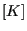 :
:
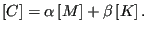 |
(887) |
The damping force satisfies:
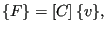 |
(888) |
where
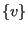
For explicit dynamic calculations without massless contact (i.e. there is no
card of the type *CONTACT PAIR,TYPE=MASSLESS in the input deck) only mass proportional damping is allowed,
i.e. must be zero. For explicit dynamic calculations with massless
contact both parameters  and can be used.
and can be used.
For structural damping the damping is a material characteristic. Each material can have its own damping value. There is one required parameter STRUCTURAL, defining the value of the damping. For structural damping the element damping force is displacement dependent and satisfies:
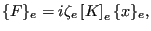 |
(889) |
where
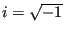 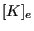 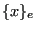 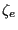
First line:
Example: *DAMPING,ALPHA=5000.,BETA=2.e-3
indicates that a damping matrix is created by multiplying the mass matrix with
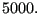 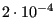
Example: *DAMPING,STRUCTURAL=0.03
defines a structural damping value of 0.03 (3 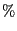
Example files: beamimpdy1, beamimpdy2.